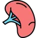

Mineral Grimoire
 Aegirine
Aegirine

SpleenAppearance
Transparent to opaque, long crystal, sometimes striated or small crystals on a matrix
Origin
Greenland, United States, Africa
Attributes
Focusing energy for personal or environmental healing, Aegirine is a powerful energy generator. Spiritually, this stone empowers the quest for your true self and teaches how to be true to that self. Aegirine assists in facing your karma confidently and with integrity. A protective stone that is extremely helpful in psychic attack and mental influence, Aegrine dissolves thought forms and helps to repair the biomagnetic sheath after the removal of attachments or negative energy.
Psychologically, this stone facilitates integrity and enhances self-esteem. Promoting sincerity in all that you do, it imparts the ability to do what is needed from the heart.
Mentally, Aegirine turns negative thoughts positive. This stone helps you to see the bigger picture and encourages you to follow your own truth without conforming to group pressure or the ideas or ideals of others. It shows how to focus your goals wisely, setting your intent without emotional investment in the outcome.
Emotionally, Aegirine heals relationship problems and transmutes grief after separation. It removes energy blockages from the emotional body and enhances positive vibrations.
Physically, by boosting the body's self-healing systems, Aegirine enhances the healing power of other crystals.
Healing
Supports cellular memory, the immune, metabolic and nervous systems, and the liver, gallbladder, spleen, muscles and bones. It overcomes muscle pain, facilitating the removal of toxins.
Position
Hold, grid or place as appropriate. To stimulate the immune system, place over the thymus. To dissolve thought forms, place on the throat, third eye or soma chakra.
Spellworking
Aegirine is a monoclinic mineral named for Aegir, the Norse god of the sea, originally discovered in Norway and sourced primarily from the African continent. It presents as a long, thin black crystal frequently mistaken for black tourmaline, though the two differ significantly in both structure and metaphysical function.
Auric Protection & Cleansing
Where black tourmaline guards against physical and environmental harm, aegirine operates at the energetic level — scanning the aura for disturbances, sealing perforations, and anticipating potential intrusions before they take hold. It consolidates and releases excess energy in the field that does not serve the bearer's well-being, reducing anxiety and restoring a sense of inner calm. Because aegirine is so effective at blocking incoming energy, practitioners should take care wearing it daily; it may sever or reduce energetic connections even with people you wish to support. Reserve it for times when external energy feels overwhelming, and set it aside when you wish to remain open and receptive.
Advanced Work
Aegirine is considered a significant tool in the practitioner's arsenal — capable of dissolving attachments of negative thought vibrations and, for those who work in this area, addressing entity attachments. It helps distinguish between one's own energy and energies absorbed from others, making it essential for healers and empaths. Paired with  Moldavite or
Moldavite or  Tektite, its auric work becomes more expansive and transformative.
Tektite, its auric work becomes more expansive and transformative.
Chakra Work
Aegirine focuses primarily on the Root Chakra, grounding the bearer while clearing the auric field. Place it on the Root Chakra during healing sessions, or wear it as an amulet when working in high-energy or draining environments.
For the Beginner: Aegirine identifies and moves blockages without requiring conscious direction. Simply carry or wear it to allow its vibration to connect with your energy field. It also supports recovery from dependencies and creates a sense of energetic spaciousness.
For the Advanced Practitioner: Aegirine releases stored trauma and absorbed negative frequencies, cutting cords to energies that do not belong to the bearer. By clearing the aura and making a pathway for higher consciousness, it helps healers establish a foundation of clarity and light from which to conduct effective energy work.
Magickal Message
"We are constantly connecting and cording to one another energetically. With my help, you will be able to distinguish between energies that belong to you and those that do not. Work with me to give yourself space and rest from the frequencies and demands of the outside world."
Colors
Aegirine forms as long, striated prismatic crystals that are typically black to dark green in color. Its absorptive darkness reflects its function as an energetic shield and purifier.